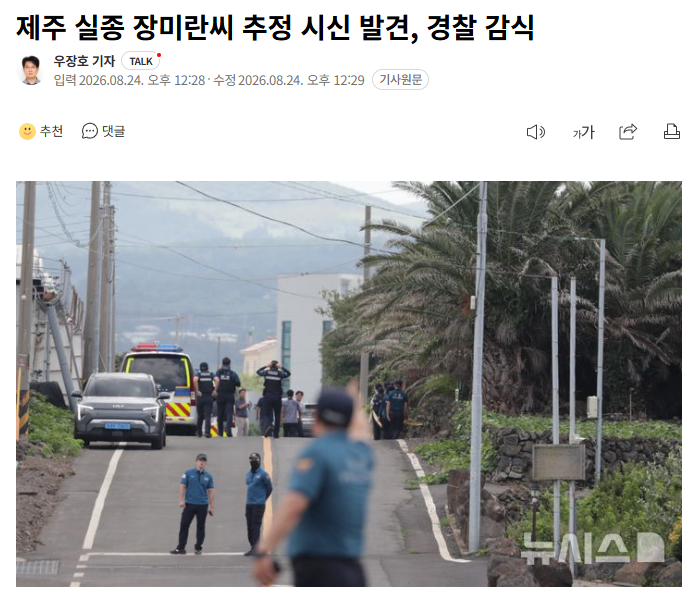
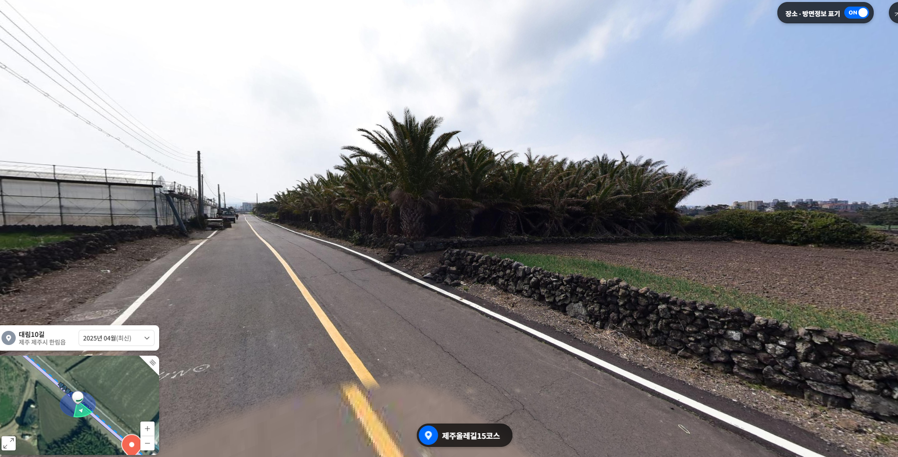
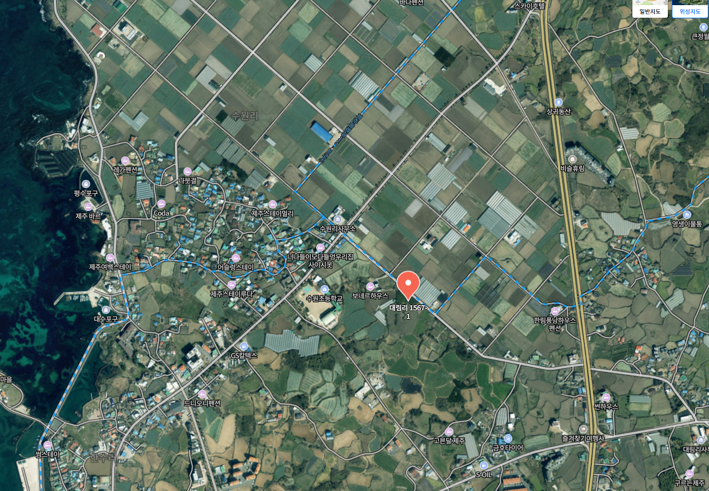
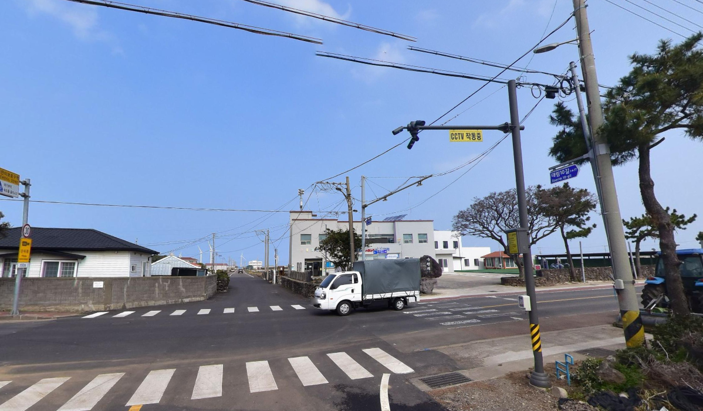

뉴스 나오는거 보고 로드뷰로 찾아봤는데


여기로 보이거든?
저 길 일직선 끝에 보면

해당길 쭉 찍고있는 cctv도 있었음.
유가족 말대로 숙소에서 나와서
바닷가 편의점 가는길이면 딱 이길 맞을텐데
실종시점에 경찰이 찾으려고만 했으면 cctv로 어찌 된건지 바로 찾았을듯.
삼가 고인의 명복을 빕니다.

뉴스 나오는거 보고 로드뷰로 찾아봤는데


여기로 보이거든?
저 길 일직선 끝에 보면

해당길 쭉 찍고있는 cctv도 있었음.
유가족 말대로 숙소에서 나와서
바닷가 편의점 가는길이면 딱 이길 맞을텐데
실종시점에 경찰이 찾으려고만 했으면 cctv로 어찌 된건지 바로 찾았을듯.
삼가 고인의 명복을 빕니다.
댓글
수집 당시 댓글 44개
부생카 · 2 시간 전
이게 다 무비자 때문이다
싸이버거를 · 2 시간 전
무비자 도입한 놈때문이네
뢰시 · 2 시간 전
진짜 어디서든 각을 만드는게 당구 좀 치실듯 ㄷㄷ
싸이버거를 · 2 시간 전
댓글에 무비자무비자 국민의 선택 국민의 선택 하도 해대기에... ㅋㅋ
깁기 · 2 시간 전
진짜 평소랑 다름없이 생활하다고가 갑자기 죽었네 안타까움
산나 · 2 시간 전
수색 하는데 경찰 인력 하루 400명씩 투입 됐다던데 저 수색으로 400명 투입된 만큼 수 많은 다른 사건들은 그 만큼 뒤로 또 밀릴거고.. 하.. 병신새끼 한마리 때문에 진짜..
김펭귄 · 2 시간 전
한마리일까? 더 캐면 존나나올듯 ㅋㅋㅋ
두비두밥두비 · 2 시간 전
3개월동안 저기 있었다는건데 너무 불쌍하다..
riccoc · 2 시간 전
경찰 한 명의 태업인가 아니면 조직범죄인가
조비에비에이샨 · 2 시간 전
경찰 가족이 뺑소니 했네 했어
전자음악 · 2 시간 전
뺑소니면 전신타박상이나 골절같은 징후를 바로 보도하지 않았을까
유니알 · 2 시간 전
그거 보도지침 위반이라 요즘 그런 식으로 보도 못 함
년도가입 · 40 분 전
애초에 부패가심하다했으니까 부검해봐야 나올듯
IllIIIllllIl · 56 분 전
"타살혐의가능성낮음"
전자음악 · 2 시간 전
저 추정장소하고 한림항 도보거리가 2km 넘던데, 항구에서 최종위치 찍힌 이유가 제일 궁금함.
익명
보통 그런 위치는 마지막 연결된 기지국 위치로 보는거라서 (GPS로 실시간 정확한 추적 아님) 마지막으로 연결된게 해당 기지국 범위다 라는 뜻임 아마 한림항에 통신사 기지국이 설치되어 있었을거야 내 위치가 실시간 정확하게 찍히려면 특정 어플로 위치공유 동의해서 계속 딴사람한테 위치 보내주고 있던가 갤럭시태그나 에어태그 이런거 해두고 있어야 가능함
자랑질해서화나게함 · 2 시간 전
저기도 가로등 하나업네...
익명
그러게 전신주 많아서 가로등달렸다 생각했는데 길에 가로등 하나가 없었네... cctv 야간 찍었어도 안보였을수도 있겠다
최후의광휘 · 2 시간 전
멀쩡한 사람이 저기 들어가 죽을리가 없는데 타살이 아니라고?
IllIIIllllIl · 55 분 전
술먹고 넘어져서 의식잃으면 가는거지
아구찜국밥 · 2 시간 전
부검 결과 보고 남은 흔적들 최대한 찾아봐야지 담당 경찰 금품 내역 다 뒤집어 까보고
마감 · 23 분 전
한여름 장마까지 지나서 이미 백골일껄
자택경비병 · 2 시간 전
제주도 이제 슬슬 무서워지네
알이즈웰 · 2 시간 전
크든 작든 섬은 섬이구나.
맨주먹정신 · 2 시간 전
다른 장미란인줄
도라이 · 2 시간 전
존나 무섭다
곧휴가철이다 · 1 시간 전
뭔가 이상하네
건설안전온열질환 · 1 시간 전
안타깝다 ㅠㅠ
년동안금식 · 1 시간 전
진짜 이상하네.. 실종인데 연락이 안되는데 연락 되엇다고 말했다고? 가족들은 그말을 듣고 그냥 기다렸다고?? 일주일만 연락 안돼도 큰일이라 생각해서 경찰서 가서 뒤집었을거같은데
루로우니켄신 · 1 시간 전
가족들한테는 뭐라하지말아라. 경찰이 "혼자있고싶으니 가족에게 말하지말아달라" 라고 전해주래요. 라고했으면 가족이 뭘 어쩔수있냐. 말한사람이 경찰인데 정말 그런가보다 하는거지.
년동안금식 · 1 시간 전
헐...
Ang마사냥꾼 · 1 시간 전
타살인가
삭사사삭사사사사삭 · 1 시간 전
다른건몰라도 맘먹고 찾으면 시체 3구 이상나오는 점이 ㅈㄴ 무섭네
틀딱살인마 · 1 시간 전
그니까ㅋㅋㅋㅋ찾기 시작하니까 하루이틀만에 갑자기 시신 두구 발견ㅋㅋㅋㅌ 더 찾다보면 세네구 더 나오겠다 ㅅㅂ
NoSugar · 1 시간 전
저숲 좀 요상하긴하네
찔롱이 · 1 시간 전
사망이 언제인지가 관건이네...3개월 지난 거면 이 날씨면 백골만 남을텐데...왜 사망했는지 타살인지 발견 장소가 최종 사망장소인지 아무것도 못 알아 내겠구만....삼가 고인의 명복을 빕니다.편히 쉬시길 바랍니다.
불광동불냉면 · 1 시간 전
시민을 개같이 아는 민중의 지팡이 검찰뿐만 아니라 경찰도 아래위로 다 썩었는데 개편 안해?
알파스트라이크 · 1 시간 전
"내 칼"을 왜 부러뜨림 날 다치게 할 칼만 부러뜨리면 된다고 내 칼에 다른사람 다치는 걸 왜 신경써 어차피 다른 칼 부러뜨렸으니 나만 칼 가졌는데ㅋ
케로로중사 · 1 시간 전
와 저기 모종 파는 업체 쪽 간간히 가던곳인데 ㄹㅇ 소름이네
owll · 57 분 전
누가 봐도 억지로 끌고 가서 죽인 거 같은데 어떻게 타살이 아니지
IllIIIllllIl · 55 분 전
아니니까
워니랑 · 47 분 전
숙소에서 나와서 편의점 가기전에 사달난건가. 진짜 안타깝네
sjw3ur · 32 분 전
진지하게 이번 사건과 연관된 경장이라는 놈 꼭 신상공개 해야한다.
커스터마이즈 · 31 분 전
저 경찰들은 어디 소속인가